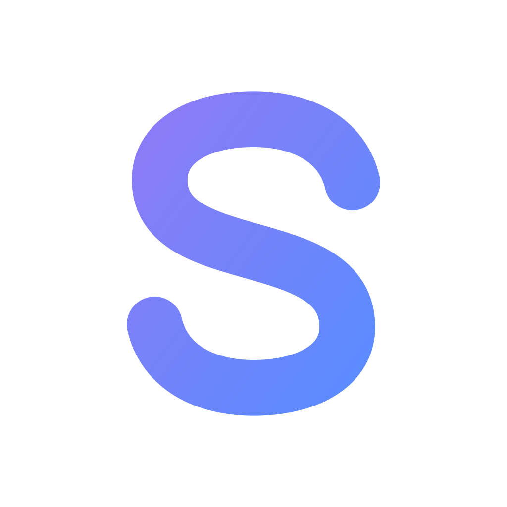

BUNU KİMSE SÖYLEMİYOR
ilk ayımda bu hatayı yaptım
0:42
SufloUzun videodan Shorts, konuşmadan kesim, tek tıkla temiz ses.
Hepsi Premiere’in içinde.
Yapay zekâ altyazıyı okur; kancayla başlayan, tek başına anlaşılan 15–60 sn’lik anları puanlayıp bulur.
Videonun başına animasyonlu başlık kartı. 5 stil, şeffaf katman, tek tık.
Bugün size ııı Premiere’de eee altyazıyı ben ben nasıl 1,8 sn hızlandırdığımı hmm göstereceğim.
Sahne değişimlerini görüntüden bulur. Marker at ya da klibi böl; müziğe dokunulmaz.
Playhead’i kesime getir, tek tık. Keyframe’ler düzenlenebilir.
Bu ayar *her şeyi* değiştiriyor
Yarın saat *09:00*’da başlıyoruz
Yapay zekâ ara görüntü konacak anları ve aranacak kelimeleri bulur; yeşil marker olarak ekler.
Transkriptten başlık, açıklama, etiket ve hashtag. Ücretsiz Groq anahtarıyla.
Altyazıyı 10+ dile tek seferde çevir; her dil için ayrı SRT. İstersen çift dilli altyazı.